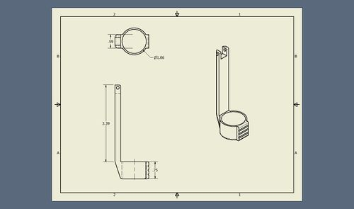

Hygiene Helper S14
Contents |
Abstract
Hygiene Device for a 19 year old male with Achondroplasia. Achondroplasia is a form of short limbed dwarfism. The client has mobility issues, we will be creating a device to assist him.
Charles Abend - Team Captain, Page editor, Family contact, Vapor Polishing
Ahmed Alkhaldi - Prototyping and testing, Vapor Polishing
Leslie Wittenbach - Contact with Rebekah, Ordering, 3D Modeling
Tracie Lamas - 3D Modeling, Case design and Fabrication
Abdulrahma Khalil - Prototyping and testing, Vapor Polishing
All group members have assisted and discussed the ideas that lead to the prototypes.
Problem Statement/overview of the need
Our client is a male with achondroplasia, his limbs are too short to reach behind himself to clean when using the restroom. He also has very limited mobility in his spine. The family of the client have tried a majority of the products on the market but none work very well.
He needs a device that is sturdy, simple, long lasting, portable and lightweight, to take with him daily.
Our team has met with the family, taking hand, arm, and reach measurements of our client, and discussed the needs and wants with them.
Grip Span - 6 in
Additional Reach needed - 10 in
Hand Width - 4 in
Products currently on the market like Freedom Wand and Self Wipe are not strong enough, do not fit our client's hands, are too long (He needs a shorter reach), use cheap materials, and prematurely release the paper or wipes.
Design Specifications
1. Handle size - 1 inch diameter
2. Handle Length - 4 inch
3. Cleanable
4. Strong enough for daily use
5. Small and light
6. Durable
7. Transportable
8. Holding mechanism for wipes
9. Latching mechanism between Handle and Cleaning pieces (for two piece design)
Conceptual Design
Design Concept 1
Two piece wand - overall length of 12 inches, giving him the needed 7 inches of additional reach
The first piece is a a handle made exactly for our clients hands with an open end to receive the second piece. It will have a gel layer where his hands will be to be more ergonomic and comfortable.
The two pieces can either be joined by the head screwing into the handle, or by the slide mechanism outlined below.
The second piece is a curved insert with an oval tip for wiping. On the back side of the wiping end to hold on to toilet paper or moist wipes the cleaning wand will have a clamp similar to a chip clip. A button will operate the the clamp, when pushed in the clamp will raise and paper can be wrapped around the product, then when the button is released the clamp will close securely on the paper. Force to keep the clamp closed will be provided by a spring.
A small slide attached to the end of the clamp's lever end, will be routed internally to a slide mechanism close to the client's thumb. The slide will fit inside the range of flexibility and reach of the client's thumb.
The device will be contained in a small, discrete case that has a compartment for both pieces wand, and an additional top compartment for moist sanitary wipes. The second piece will have a latch mechanism to easily disassemble from the top piece for storage and transport.
We are looking into 3D printing for rapid prototyping. ABS plastic is our main focus, but there are options for PLA, Steel, Aluminum, or Brass to be printed as well.
Once the prototype is made we will give it to the client for a week of testing, then adjust our design based on their feedback.
After the design changes the final device will be made and coated in silicon rubber. This will be easy to clean and and will hold up to daily use.
Pro's
Most Compact, Most portable
Easy to clean
Light weight
Repair-able
Con's
Possible weakness at connection point after time

Concept for Clamp
Design Concept 2
Single piece wand - very similar to two piece design except the handle and head are included in 1 body. Overall length of 12 inches, giving the needed 8 inches of additional reach.
The wand's handle is created to fit the dimensions of our clients hands perfectly. The handle end will have a gel grip for comfort and ergonomics.
The cleaning end will have an oval(egg) shaped tip on the wiping side and a clamp on rear side to hold on toilet paper or moist wipes. It will have a curve in the body to have a better contact angle for wiping.
A lever will operate the clamp, when pushed down the clamp will raise and toilet paper or moist wipes can be wrapped around the product, then when the lever is released the clamp will close securely on the paper. Force to keep the clamp closed will be provided by a spring. After wiping, pressing the clamp down will cause the paper to fall into the toilet bowl.
A small slide attached to the end of the clamp's lever end, will be routed internally to a slide mechanism close to the client's thumb. The slide will fit inside the range of flexibility and reach of the client's thumb.
A discrete carrying case will be made to fit securely around the device using foam inserts and have an additional compartment for wet wipes.
We are looking into 3D printing for rapid prototyping. ABS plastic is our main focus, but there are options for PLA, Steel, Aluminum, or Brass to be printed as well.
Once the prototype is made we will give it to the client for a week of testing, then adjust our design based on their feedback.
After the design changes the final device will be made and coated in silicon rubber. This will be easy to clean and and will hold up to daily use.
Pro's
Simplest design, reduced chance of failure
Theoretically stronger
Lighter
Con's
Reduced Portability
Design Concept 3
Portable Bidet
A 5x5x5 hollow box containing a small water pump. The box will have a water tight compartment on the side for a battery to supply power to the pump. There will be two holes in the box, one for a hose to intake water and the other to a positionable sprayer hose to clean.
The water inlet side will have a long hose that can be placed in a clean water source, such as a sink, tank, or flushed toilet.
The water outlet will have a semi rigid flexible hose that can be bent and arranged to clean the dirty area.
The pump would be small and sourced from personal aquarium water pumps
A D battery or lithium-ion rechargeable pack will provide the power to the pump. I twill be replaceable/Chargeable in a water resistant casing
There is a large indent to sit on a seat of the toilet, Straps on the side can be used to secure it to the toilet base.
Pro's
Very little cleaning of the device is necessary
Can give the most comfortable and thorough cleaning
Con's
Increased complexity
Harder to repair
Must be charged
Reduced portability
Evaluate concepts/select candidate
We are choosing the two piece design as our main concept because of its portability and repair-ability. We can have a final .STL file ready for 3D printing in two weeks for all parts. Once the device is printed, we can give it to the client for evaluations and recommendations for any feature changes or dimensional changes needed.
We can release the .STL files to the family so they can have any damaged, broken, or misplaced pieces reprinted and replaced by themselves in the future by any online 3D printing company.
Detailed Design
Description of selected design
A 3D printed wiping wand printed in ABS plastic. The main piece is a bent cylinder with a a hollow back cover to conceal a sliding mechanism that is connected to an upper clamp. The clamp is connected to the slide and the main body. A small spring sourced from a chip clip will provide the force to keep the paper secured to the device. A removable handle can be secured to the body by screwing on. Threads will be printed onto the handle and inside of the body.
The slide fits around the bottom of the body and is partially hidden inside of a box on the back of the device. The slide is connected to the clamp using a 1/8 in. rod. The clamp is also connected to the main body through a revolute joint with a 1/8 in. rod.
A carrying case is being constructed from Duck cloth and vinyl. It will hold the device with elastic to either wall of the pouch and will have a second zippered area to hold wet wipes.
The Device is roughly 164 cm^3. Using a cost of .05 $ per cm^3, Before the grip, spring, and connecting rods, the cost to have the four pieces printed is 8.20$
Detailed drawings of individual pieces
 |
|
Analysis
A state limit design with a safety factor of 3 is included, along with a mobility equation.
Engineering analysis 1
Vapor Polishing Procedures
Things you need before starting:
1. Glass container larger than printed piece
2. Carrier (hook) to place pieces inside the jar
3. Acetone
4. Gloves and safety glasses
5. Heated build plate
6. Aluminum foil
Procedures:
Start in a well ventilated area or under a hood. Wear gloves and safety glasses.
1. Heat up the plate until you reach 120 C with the jar on top of the plate.
2. Fill the jar with 3- 4 mm (deep) of acetone.
3. Once the acetone vapor warms up and reaches the top of the jar, turn the plate back down to 90 C for the treatment.
4. Place the part on the sheet of aluminum and lower the object into the vapor bath gently.
5. Leave it inside for 15-20 minutes (depends on the size of the part). Watch the pieces progress every minute. You will see the surface start to gloss. Do not forget about the piece - if left too long, the surface will start to sag and the piece will be permanently deformed.
6. When the surface gets smoothed out to the desired level of detail, remove the ABS piece.
7. Let the part sit for another 10 minutes for drying off before handling.
Notes:
Acetone Specifications-
Boiling Point: 133.2 F
Auto-ignition Temperature: 869 F
Vapor Density: 2 (air=1)
Exposure Limit: 1000ppm
Non corrosive in presence of glass
Acetone is hazardous. Do not let is splash on skin or breathe any fumes.
Vapor Polishing will diminish rigidity slightly immediately after removal. The effect is greater the thinner the part(200-500 micron thickness will will be very flexible the first day).
Parts will retain mostly full rigidity after 5 days.
This process is used to seal the ABS and smooth out all printing lines.
Engineering analysis 2
Mobility analysis
n=3 f_1=3 f_2=0
m = 3(n-1)-2(f_1)-1(f_2)
= 3(3-1)-2(3)-1(0) = 3(2)-(6) = 0
By the mobility equation, we have a mobility of zero. We have ensured there is clearance between the prismatic slide and the body. This is to prevent binding and excessive wear. In class, it was stated the mobility equation does not always work, this is one of those times.
Engineering analysis 3
Limit State Design
for a safety factor of 3
3 = sigma_fail/sigma_allow
ABS has a flexural Modulus of 10,500 psi
3(sigma_allow) = 10,500 psi
sigma_allow = 3500 psi
3500 psi = ( Force / Area)
The heads diameter is 1 inch
Force = 3500 psi * ( (pi* 1^2)/4)
As long as the user does not exceed 2749 pounds, our device will remain intact.
Because of this large force and a safety factor of 3, we feel ABS will be a well suited material for this use.
Bill of Materials
| Item Name | Quantity | Source | Cost |
|---|---|---|---|
| Spool ABS (1kg) | 1 | makerbot.com | 39.99 |
| Bicycle Handle Grips | 1 pair | Cookeville Biycyle | 8.99 |
| 302 Stainless Steel Spring | 4 | McMaster Carr | 17.22 |
| Duck Cloth | 1 sq. yd | Hancock Fabric | 8.49 |
| Vinyl | 1 sq. yd | Hancock Fabric | 2.99 |
| Elastic | 1 sq. ft | Hancock Fabric | 3.25 |
| Zippers | 2 | Hancock Fabric | 4.18 |
| Acetone 6 oz. | 1 | Walgreen's | 2.79 |
| 302 Stainless Steel 1/8" rod | 1 | Amazon | 9.89 |
| Total | 88.80 |
note: If there were no 3D printer on campus, having our design sent off too be printed would cost around 1.40- 1.75$ per cm^3 which would equal 229.60 - 285.25 $ bringing our total to 264.27 - 319.92 $
Testing timeline
Once we have the pieces printed and assembled we will be running the device through various fluid/ chemical test to make sure the material does not discolor or warp from normal house hold cleaners. We will also make sure the device is not absorbing any liquid and that is indeed sealed.
We will test to see if it is dishwasher safe and we will make sure it is an effective cleaning device. After testing, we have determined the device is NOT DISHWASHER SAFE, safe for most common household cleaners
Testing should take no more than 2 weeks.
Once our testing is complete we will meet with the family to make sure the dimensions are comfortable for our client and suits his needs. If any adjustments need to be made, we will adjust out .ipt drawings accordingly.
Assembly Instructions
If your pieces are held together with rods, your holes will most likely needed to be cleaned out with an appropriate sized needle file. Our holes were cleaned out and shaved with an 1/8 inch needle file. Afterwards our 1/8 inch stainless steel rod fits perfectly.
Sanding
What you need:
320 Grit Sand Paper
Running Water
Procedure:
Sand until desired smoothness under running water.
Vapor Polishing Procedure(redux)
What you need:
Presto Counter Fryer
Acetone
non stick aluminum foil
Sanded Abs printed pieces†
Directions:
While cold, place 1 ounce of acetone into the bottom of the fryer.
Fold aluminum foil into a geometrical shape with the smallest amount of contact surface with the piece and the fryer cage.
Place fryer cage into fryer and cover and set to warm. As soon as you see condensation on the lid, disconnect the power or turn off.
Time 30 seconds; after the 30 seconds, carefully remove the piece and let sit 3 minutes before handling since the surface will be tacky.
Repeat process for each additional part. When the fryer is hot, add 2 ounces of acetone since it will quickly vaporize once it hits the heat. Wait ten minutes for each individual piece in between coats.
†It is crucial that the parts are sanded smooth. The better the sanding is, the fewer defects (air bubbles) will be in the final product. For optimal sanding, we wet sanded all the parts with a fine 320 grit paper.
Fabrication Process
Modeling
All Pieces were modeled in Inventor 2014 over the course of the semester. A few dozen small changes have taken place over that time, each getting the pieces closer and closer to our final product.
3D Printing
The pieces were printed in a Makerbot 2 using ABS plastic. Our largest piece, roughly 1.2 inches in diameter and 10 inches long, took 18 hours to print, the smaller pieces took from 3 to 5 a piece.
Sanding
To ensure a smooth finish and defect free polished surface, the pieces were wet sanded with 320 grit sand paper for close to 15 minutes for each individual piece.

Hole boring
The 3D printer has trouble making clean holes, so it was crucial that we met an exact 1/8 inch hole diameter on the slide, clamp, and head. To do this, an 1/8 inch needle file was used to clean and shave the plastic to make a perfect fit with the 1/8 inch stainless steel rod.
Rod Cutting
Our 302 Stainless steel rod was measured, cut with a hand saw, the edges were filed and smoothed, and then pressed into the piece. It is a very tight fit and the ends will be peened outwards to lock it into the head and slide.
Vapor Polishing
This was actually our most difficult step. Acetone is boiled below a suspended ABS plastic piece to create an acetone vapor cloud in the bottom of the heating container. In our case, we received the best results from a Presto Counter Fryer. The acetone cloud is very hot, around 100 degrees Fahrenheit. When it contacts the ABS it melts and clarifies the outermost layer. The longer it is held in the cloud, the thicker the vapor will penetrate and melt the piece. When the part dries, it solidifies and seals the plastic so nothing can be absorbed into or grow in it. The longer the vapor polishing, though, the more loss in detail you will see. We choose to have three 30 second coats on our pieces, except the handle. It will only get 1 coat to prevent loss of detail on the male end of our plastic threads, as these require that we retain as much detail as possible.
Photos of Completed design
Our final fully assembled device holding toilet paper. We learned that tolerances must be accounted for in the design. We designed pieces to fit perfectly together, and 3D printing is not exactly perfect. All of our pieces had to be planed where they contacted another piece to reduce friction. The rabbit ears on the body and where they meet on the clamp, all had to be sanded more than the rest of the body so that once the device was assembled the friction wouldn't keep it from operating. This was also the case for where the slide and the clamp meet. The long slot was designed too narrow so it has to be bored out slightly.
The the outer holes that hold the rod in place were bored less than the rest of the holes so there was plenty of friction to keep the rod's in place. The ends of the rods were also pined outwards to prevent any movement.

The toilet paper wraps very easily around the end since it will remain in the open or closed position without force being applied. As soon as you push the slide down towards the paper, the clamp and spring put more than enough force down to secure the paper for wiping.
Our bag holds the device securely and has an additional pocket for holding a small bag of wet wipes
Instructions for safe use
Cleaning Instructions:
The Polished ABS plastic can be cleaned with soap, bleach, ammonia, or bleach free disinfectant. It is not dishwater safe due to discoloration and warping in the plastic. Warm or hot are recommended, but boiling water is not.
Clean and dry after use and store in provided case.
Usage instructions:
Pull slide above the handle grip down to raise the clamp from the head.
Wrap toilet paper or wet wipes around the head. Release slide.
Wipe. Pull slide down again to release paper. Repeat.
Summary and Conclusions
This project has been incredibly rewarding. Not only did we get to flex our design muscles, our troubleshooting skills, and learn the value of time management, We were able to change someone's life.